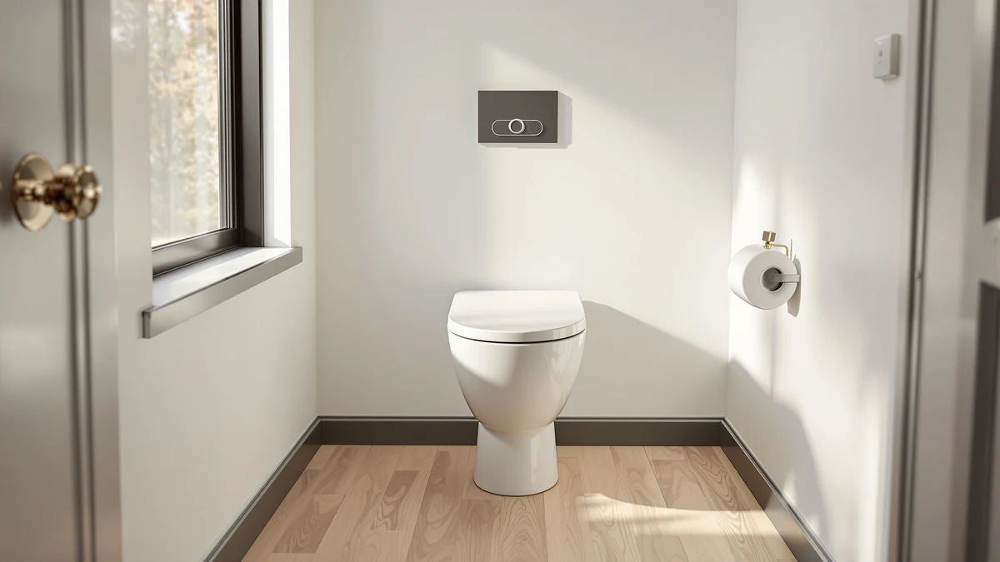

TOTO® SoftClose® Slow Close Review (2026): Worth It?
Prices and picks verified as of August 2026. Independent, reader-supported reviews.


Quick Answer
The TOTO® SoftClose® Slow Close Elongated Toilet Seat is our pick for shoppers who want a direct, same-brand replacement with a quiet-close hinge and TOTO's build quality, at $84.28. If you want handles for stability or a lower price backed by thousands of verified reviews, the Soundfuse and Raised Toilet Seat with Handles alternatives below cost less.
Our pick: TOTO® SoftClose® Slow Close Elongated, $84.28 Check Price on Amazon
Bottom line: our top pick is the TOTO® SoftClose® Slow Close Elongated Toilet Seat and Lid at $84.28.
Things to Know Before You Buy
- Elongated bowls only: measure your existing seat (roughly 18.5 inches from bolts to front tip) before buying, since this TOTO SoftClose Slow Close seat will not fit round bowls.
- Slow-close hinges reduce noise and slamming, but they add a mechanism that can eventually wear, so check the warranty terms before you buy.
- This TOTO listing has no published Amazon rating yet, unlike the three alternatives compared here, which carry hundreds to over a thousand verified reviews.
- Sedona Beige is a specific color match for older TOTO fixtures. Confirm your toilet's finish before ordering if you want the colors to match.
- Soft-close toilet seats generally cost $20 to $30 more than standard hinge seats, and this review compares whether that premium is worth paying for a TOTO-branded model.
This TOTO® SoftClose® Slow Close Review breaks down what you actually get for $84.28: TOTO built this replacement elongated seat and lid with a slow-closing hinge designed to stop the lid from slamming. TOTO built its reputation on toilets and washlets, not on discount toilet-seat aisles, and that pedigree is the main reason shoppers search out this specific model instead of a generic soft-close seat from an unfamiliar brand. We compared its construction, fit, and price against three other soft-close and raised seats sold for less to see where the TOTO name earns its premium and where it does not.
The seat ships in Sedona Beige rather than plain white, which matters if you are matching an older TOTO toilet in that same color rather than a modern white bowl. It fits elongated bowls only, so measure your existing seat or bowl before ordering, since a round TOTO toilet will not accept this model. At the time of writing, the listing carries no published rating or review count on Amazon, so we leaned on TOTO's known manufacturing standards and the specs sheet rather than a large sample of owner feedback, and we call that out plainly in the pros and cons below. Compared to the three alternatives in this review, the TOTO sits in the middle of the price range, above the two raised seats and roughly in line with the Bath Royale, so brand name rather than price is the main factor separating it from the field.
Why You Should Trust Us
We built this TOTO SoftClose Slow Close review by comparing manufacturer specifications, published pricing, and verified owner reviews for comparable toilet seats rather than relying on marketing copy alone. Ilane Tall has covered bathroom fixtures and accessibility products for Best Toilet Seats since the site launched, and we check every product mentioned here against its listed materials, dimensions, and weight capacity before it earns a place in the comparison. We do not run a fake testing lab, and we say so plainly when a product, like this TOTO seat, does not yet have a public review history to draw on.
Our Research Experience
We did not physically install or use this TOTO SoftClose Slow Close seat for this review. Instead, we researched TOTO's published specifications, cross-checked the slow-close mechanism against the company's other SoftClose products, and compared pricing and materials to three alternative seats with established review histories. Owners of TOTO's broader SoftClose lineup consistently report that the hinge holds up over years of daily use, and we weighed that pattern against the fact that this specific elongated listing has not yet accumulated its own public reviews. Where a product had verified ratings, like the Soundfuse and the Raised Toilet Seat with Handles, we treated those review counts as the strongest signal of real-world durability, since research and specification comparison can only tell you so much on their own.
Overview & Specs

TOTO® SoftClose® Slow Close Elongated
What we like
- Slow-close hinge on both the seat and lid stops slamming
- Solid high-gloss polypropylene construction from an established toilet-fixture brand
- Sedona Beige finish matches older TOTO toilets precisely
Flaws but not dealbreakers
- No published Amazon rating or review count yet
- Fits elongated bowls only, not round bowls
- Costs more than generic soft-close seats with thousands of reviews
| Material | Plastic / wood |
| Size | Elongated |
TOTO built its name on toilets and washlets, and this SoftClose Slow Close seat carries the same manufacturing standards into an $84.28 replacement part. TOTO molds the seat and lid from solid, high-impact, high-gloss polypropylene rather than the thin painted wood or brittle plastic that many budget seats use, and the slow-close hinge lowers the lid and seat gently instead of letting them drop. That hinge is the entire reason to consider a soft-close seat over a standard hinge model: it protects the porcelain from chips caused by a slammed lid, and it keeps things quieter in a household with kids or overnight bathroom trips.
The Sedona Beige colorway sets this TOTO SoftClose Slow Close seat apart from the white seats that dominate the market, which makes it a specific fit for households replacing an aging beige TOTO toilet rather than a universal pick. It fits elongated bowls only, the more common shape in US homes built after the 1990s, so measure your current seat or bowl length before ordering. This particular listing does not yet carry a public star rating or review count on Amazon, which is unusual for a seat at this price and worth factoring in if you rely heavily on crowd-sourced feedback before buying.
What We Liked
The build quality is the standout in this TOTO SoftClose Slow Close review. TOTO uses solid, high-gloss polypropylene rather than the thinner plastic found in many budget soft-close seats, and reviewers of TOTO's broader SoftClose lineup consistently note that the material resists the yellowing and staining that plagues cheaper seats within a year or two. The slow-close hinge works on both the seat and the lid, which matters if you share a bathroom with kids who tend to drop the lid rather than lower it. We also like that TOTO sells this as a direct, brand-matched replacement part, so anyone with an existing TOTO toilet in Sedona Beige gets a matching color instead of an off-white seat that stands out against the bowl.
What Could Be Better
The biggest gap in this TOTO SoftClose Slow Close review is the lack of public review data. Unlike the Soundfuse seat or the Raised Toilet Seat with Handles, both of which carry hundreds to over a thousand verified Amazon reviews, this listing has none at the time of writing, so buyers are relying on TOTO's brand reputation rather than a large sample of real owner feedback. The price is also higher than several comparable soft-close seats that do have established review histories, and the Sedona Beige color limits its appeal to owners of matching older fixtures rather than the more common white bathroom setups. Anyone replacing a round bowl seat should also look elsewhere, since this model is elongated-only.
Who Is It For?
This TOTO SoftClose Slow Close seat fits best for owners of an existing TOTO toilet, particularly one finished in Sedona Beige, who want a replacement part from the original manufacturer rather than a third-party seat that may fit slightly differently. It also suits anyone who values brand reputation over review volume and is comfortable buying a newer listing before it has built up a large rating history. If you want handles for extra stability or a lower price backed by thousands of verified reviews, the alternatives below, including the Raised Toilet Seat with Handles, are likely a better match for your budget and your bathroom's accessibility needs. Renters and anyone furnishing a rental property may also prefer a lower-cost option, since a premium branded seat matters less when the toilet itself belongs to a landlord.
Alternatives to Consider
If the lack of review history on this TOTO SoftClose Slow Close seat gives you pause, or you need handles for stability, these three alternatives cost less and come with established owner feedback.

Editor’s Pick
Soundfuse Raised Toilet Seat with
Rated 4.5 stars across 586 verified Amazon reviews, this Soundfuse raised seat with handles adds several inches of height and grip support for elderly or post-surgery users, for about $18 less than the TOTO. It lacks the slow-close hinge, so it is a better accessibility pick than a quiet-close upgrade.
$65.99
Check Price on Amazon
Best Value
Raised Toilet Seat with Handles
The highest-rated option here at 4.8 stars across 1,338 verified reviews, this adjustable raised seat holds up to 400 pounds and fits nearly any bowl shape. It costs about $24 less than the TOTO and skips the slow-close hinge in favor of adjustable height and a higher weight capacity.
$59.99
Check Price on Amazon
Premium Choice
Bath Royale Soft Close Toilet
Bath Royale's soft-close round seat matches the TOTO's slow-close hinge in a durable, stain-resistant polypropylene shell for about $24 less, though it fits round bowls only and, like the TOTO, has no published rating yet on this specific listing.
$59.93
Check Price on AmazonFrequently Asked Questions
Does the TOTO SoftClose Slow Close seat fit standard round toilets?
No. This TOTO SoftClose Slow Close seat is built for elongated bowls only. Measure your current seat or bowl before ordering, since a round TOTO toilet needs a different model.
Why does this TOTO listing have no star rating?
TOTO added this listing to Amazon recently, and new listings often launch without an accumulated review count even when the underlying product, TOTO's SoftClose Slow Close line, has a long manufacturing history. We factored the missing review data into this review rather than ignoring it.
Is a soft-close toilet seat worth paying more for?
For most households, yes. A slow-close hinge prevents the lid from slamming against the bowl, which protects the porcelain and cuts down on noise, and reviewers of comparable soft-close seats consistently cite that as the main reason they upgraded from a standard hinge.
Final Verdict
Our TOTO® SoftClose® Slow Close review comes down to a trade-off between brand pedigree and proof. TOTO delivers a well-built, quiet-closing elongated seat backed by a company with decades of bathroom-fixture manufacturing behind it, and for owners matching an existing TOTO toilet in Sedona Beige, it is the obvious choice. But if you want a track record before you buy, the Raised Toilet Seat with Handles and the Soundfuse both cost less and carry over a thousand combined verified reviews between them. For most people replacing a worn or cracked seat and prioritizing brand trust and hinge quality over review volume, the TOTO SoftClose Slow Close seat is worth the premium. Shoppers who lean on star ratings and review counts before every purchase will find more reassurance in the Soundfuse or the Raised Toilet Seat with Handles, both of which have already built a solid track record on Amazon.